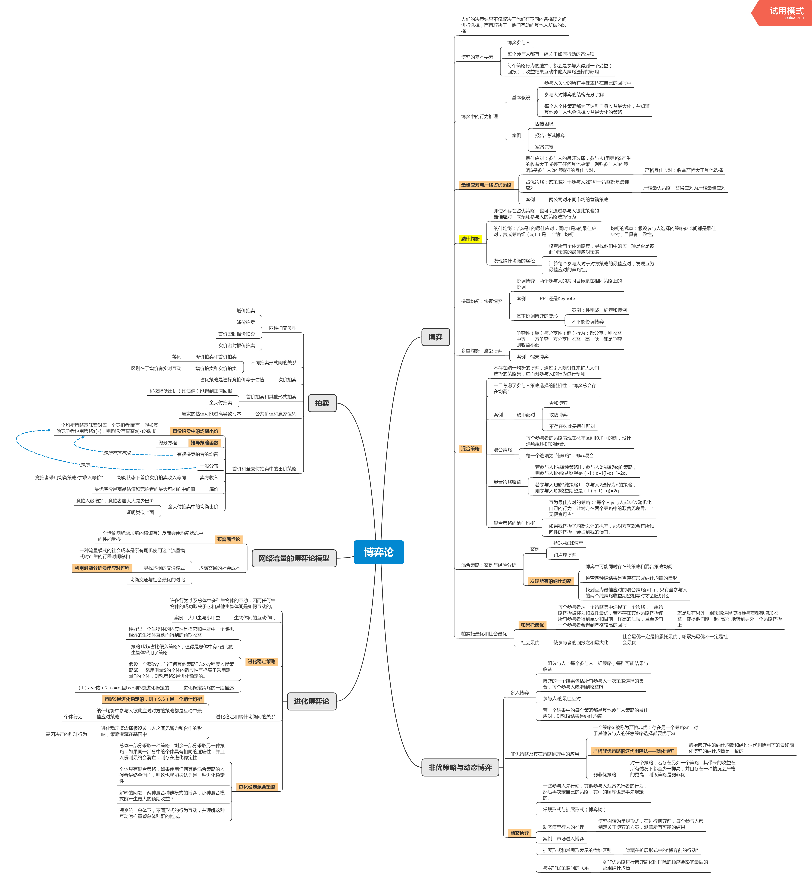

对《网络、群体与市场——揭示高度互联世界的行为原理与效应机制》中的第二部分内容的简要整理。
博弈
人们的决策结果不仅取决于他们在不同的备择项之间进行选择，而且取决于与他们互动的其他人所做的选择
博弈的基本要素
- 博弈参与人
- 每个参与人都有一组关于如何行动的备选项
- 每个策略行为的选择，都会是参与人得到一个受益（回报），收益结果互动中他人策略选择的影响
博弈中的行为推理
基本假设
- 参与人关心的所有事都表达在自己的回报中
- 参与人对博弈的结构充分了解
- 每个人个体策略都为了达到自身收益最大化，并知道其他参与人也会选择收益最大化的策略
案例
- 囚徒困境
- 报告-考试博弈
- 军备竞赛
最佳应对与严格占优策略
最佳应对：参与人的最好选择，参与人1用策略S产生的收益大于或等于任何其他决策，则称参与人1的策略S是参与人2的策略T的最佳应对。
- 严格最佳应对：收益严格大于其他选择
占优策略：该策略对于参与人2的每一策略都是最佳应对
- 严格最优策略：替换应对为严格最佳应对
案例
- 两公司对不同市场的营销策略
纳什均衡
- 即使不存在占优策略，也可以通过参与人彼此策略的最佳应对，来预测参与人的策略选择行为
纳什均衡：若S是T的最佳应对，同时T是S的最佳应对，责成策略组（S,T）是一个纳什均衡
- 均衡的观点：假设参与人选择的策略彼此间都是最佳应对，且具有一致性。
发现纳什均衡的途径
- 核查所有个体策略集，寻找他们中的每一项是否是彼此间策略的最佳应对策略
- 计算每个参与人对于对方策略的最佳应对，发现互为最佳应对的策略组。
多重均衡：协调博弈
- 协调博弈：两个参与人的共同目标是在相同策略上的协调。
案例
- PPT还是Keynote
基本协调博弈的变形
- 案例：性别战、约定和惯例
- 不平衡协调博弈
多重均衡：鹰鸽博弈
- 争夺性（鹰）与分享性（鸽）行为：都分享，则收益中等，一方争夺一方分享则收益一高一低，都是争夺则收益很低
- 案例：懦夫博弈
混合策略
- 不存在纳什均衡的博弈，通过引入随机性来扩大人们选择的策略集，进而对参与人的行为进行预测
- 一旦考虑了参与人策略选择的随机性，“博弈总会存在均衡”
案例
硬币配对
- 零和博弈
- 攻防博弈
- 不存在彼此是最佳配对
混合策略
- 每个参与者的策略表现在概率区间[0,1]间的树，设计选项组H和T的混合。
- 每一个选项为“纯策略”，即非混合
混合策略收益
- 若参与人1选择纯策略H，参与人2选择为q的策略，则参与人1的收益期望是（-1）q+1(1-q)=1-2q.
- 若参与人1选择纯策略T，参与人2选择为q的策略，则参与人1的收益期望是（1）q-1(1-q)=2q-1.
混合策略的纳什均衡
- 互为最佳应对的策略：“每个人参与人都应该随机化自己的行为，让对方在两个策略中的取舍无差异。”“无便宜可占”
- 如果我选择了均衡以外的概率，那对方就就会有所倾向性的选择，会占到我的便宜。
混合策略：案例与经验分析
案例
- 持球-抛球博弈
- 罚点球博弈
发现所有的纳什均衡
- 博弈中可能同时存在纯策略和混合策略均衡
- 检查四种纯结果是否存在形成纳什均衡的情形
- 找到互为最佳应对的混合策略p和q；只有当参与人的两个纯策略收益期望相等时才会随机化。
帕累托最优和社会最优
帕累托最优
每个参与者从一个策略集中选择了一个策略，一组策略选择被称为帕累托最优，若不存在其他策略选择使所有参与者得到至少和目前一样高的汇报，且至少有一个参与者会得到严格较高的回报。
- 就是没有另外一组策略选择使得参与者都能增加收益，使得他们能一起“高兴”地转到另外一个策略选择上
社会最优
使参与者的回报之和最大化
- 社会最优一定是帕累托最优，帕累托最优不一定是社会最优
非优策略与动态博弈
多人博弈
- 一组参与人；每个参与人一组策略；每种可能结果与收益
- 博弈的一个结果包括所有参与人一次策略选择的集合，每个参与人i都得到收益Pi
- 参与人i的最佳应对
- 若一个结果中的每个策略都是其他参与人策略的最佳应对，则称该结果是纳什均衡
非优策略及其在策略推理中的应用
- 一个策略Si被称为严格非优：存在另一个策略Si’，对于其他参与人的任意策略选择都要优于Si
严格非优策略的迭代删除法——简化博弈
- 初始博弈中的纳什均衡和经过迭代删除剩下的最终简化博弈的纳什均衡是一致的
弱非优策略
- 对一个策略，若存在另外一个策略，其带来的收益在所有情况下都至少一样高，并且存在一种情况会严格的更高，则该策略是弱非优
动态博弈
- 一些参与人先行动，其他参与人观察先行者的行为，然后再决定自己的策略，其中的顺序也是事先规定的。
- 常规形式与扩展形式（博弈树）
动态博弈行为的推理
- 博弈树转为常规形式，在进行博弈前，每个参与人都制定关于博弈的方案，涵盖所有可能的结果
案例：市场进入博弈
扩展形式和常规形表示的微妙区别
- 隐藏在扩展形式中的“博弈前的行动”
与弱非优策略间的联系
- 弱非优策略进行博弈简化时排除的顺序会影响最后的那组纳什均衡
进化博弈论
许多行为涉及总体中多种生物体的互动，因而任何生物体的成功取决于它和其他生物体间是如何互动的。
生物体间的互动作用
- 案例：大甲虫与小甲虫
进化稳定策略
- 种群里一个生物体的适应性是指它和种群中一个随机相遇的生物体互动而得到的预期收益
- 策略T以x占比侵入策略S，值得是总体中有x占比的生物体采用了策略T
- 假设一个整数y，当任何其他策略T以x<y程度入侵策略S时，采用测量S的个体的适应性严格高于采用测量T的个体，则称策略S是进化稳定的。
进化稳定策略的一般描述
- （1）a>c或（2）a=c,且b>d则S是进化稳定的
进化稳定和纳什均衡间的关系
- 策略S是进化稳定的，则（S,S）是一个纳什均衡
纳什均衡中参与人彼此应对对方的策略都是互动中最佳应对策略
- 个体行为
进化稳定概念择假设参与人之间无智力和合作的影响，策略潜藏在基因中
- 基因决定的种群行为
进化稳定混合策略
- 总体一部分采取一种策略，剩余一部分采取另一种策略，如果同一部分中的个体具有相同的适应性，并且入侵则最终会消亡，则存在进化稳定性
- 个体具有混合策略，如果使用任何其他混合策略的入侵者最终会消亡，则这也就能被认为是一种进化稳定性
- 解释的问题：两种混合种群模式的博弈，那种混合模式能产生更大的预期收益？
- 观察统一总体下，不同形式的行为互动，并理解这种互动怎样重塑总体种群的构成。
网络流量的博弈论模型
布雷斯悖论
- 一个运输网络增加新的资源有时反而会使均衡状态中的性能受损
均衡交通的社会成本
- 一种流量模式的社会成本是所有司机使用这个流量模式时产生的行程时间总和
寻找均衡的交通模式
- 利用潜能分析最佳应对过程
均衡交通与社会最优的对比
拍卖
四种拍卖类型
- 增价拍卖
- 降价拍卖
- 首价密封报价拍卖
- 次价密封报价拍卖
不同拍卖形式间的关系
降价拍卖和首价拍卖
- 等同
增价拍卖和次价拍卖
- 区别在于增价有实时互动
次价拍卖
- 占优策略是选择竞拍价等于估值
首价拍卖和其他形式拍卖
- 稍微降低出价（比估值）能得到正值回报
- 全支付拍卖
公共价值和赢家诅咒
- 赢家的估值可能过高导致亏本
首价和全支付拍卖中的出价策略
首价拍卖中的均衡出价
- 一个均衡策略意味着对每一个竞拍者i而言，假如其他竞争者也用策略s(~)，则i就没有偏离s(~)的动机
推导策略函数
- 微分方程
有很多竞拍者的均衡
- 一般分布
卖方收入
均衡状态下首价次价拍卖收入等同
- 竞拍者采用均衡策略时“收入等价”
底价
- 最优底价是商品估值和竞拍者的最大可能的中间值
全支付拍卖中的均衡出价
- 竞拍人数增加，竞拍者应大大减少出价
- 证明类似上面
XMind: ZEN - Trial Version
博弈这个视角很有意思，看完感觉各种东西都能套一套，但是总有一种潜在的理性人假定，有点太“直”了吧。可能在经济或者一些宏观层面上很适用，但是在意见市场或者信息沟通中，情况似乎复杂很多，比如收益判断的尺度就比较难衡量，是不是需要考虑不懂博弈规则的人如何入场参与，收益如何判定，多种博弈同时存在的情况等。